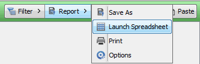

Image Studio Help > Tables > Working with Table Data
Working with Table Data
The top right of the Table section has commands to Filter the Table, Report table information, and choose Columns to display in the table. You can also Copy selected rows from the table onto the clipboard for pasting into other programs and Paste the contents of the clipboard into the table.
Copy
The Copy button copies to the
clipboard the selected rows of the table view in the current order. If
you want all visible rows from the table, Ctrl-A
will select them all, or click the Select All button in the upper left corner of the table . Column headings are included.
- Click the tab on the left top of the Table section to select the Table you want to work with.
- Select one or more rows in the table. (Press Ctrl-A
to select them all, including the column headings, or click Select All in the upper left corner of the table.)
- Click Copy or press CTRL+C on your keyboard. This copies the selection to the clipboard. You can now paste the rows with the column headings in another program.
Paste
The Paste button pastes data from the clipboard down a table column starting at the current selection.
- In the selected table, select any editable row or column.
- Click Paste or press CTRL-V on your keyboard. This adds the rows from the clipboard in the selected column beginning with the selected row. Each entry in the paste buffer fills one row in the table view. Rows are filled starting with the selected row down one row per entry until reaching the last row in the table view.
- If there are fewer entries in the paste buffer than remaining rows in the table view, all the entries in the paste buffer are used, but all the rows may not be filled with new entries.
- If there are more entries in the paste buffer than remaining rows in the table view, the new entries are pasted into the selected column beginning at the selected row with a new entry in each subsequent row until the end of the table view is reached. A warning message displays stating that some entries in the paste buffer are discarded.
When the paste with multiple entries in the clipboard function is used on tables outside of the Images Table on an Images Table column, all rows of this column will be the same. All values in this column will have the value of the last row filled in with this paste operation. This is because only one value is applied to this column of the Images Table for a given Image ID. Since the non-image table is only of one Image ID, all rows of any Images Table column are the same.
Launch Spreadsheet
To export data to a spreadsheet:
- Select the rows that you want to export to a spreadsheet.
- Click Report in the upper right corner of the Table section and select Launch Spreadsheet from the list to create a (*.xls) file containing the selected rows of the table view in the current order.

- If you have Excel on your computer, or another spreadsheet program that can open .xls files, the program is launched. First you will be prompted for a name. You can accept the default, or change the name and location. The program then opens.
NOTE: If you do not have an Excel or compatible program installed, you will get a message that an application to read Excel files must be installed before using this feature. You must also set the file association to open the application for files with the .xls extension (this is done in the Windows Control Panel –> Default Programs –>Set Associations dialog).